I. Český Lawn-Tennis Klub Praha · od roku 1893
Antuka uprostřed Prahy.
Ťukněte do antuky – stopa míčku zmizí jako na kurtu.
Na Štvanici od roku 1901
13 antukových kurtů v létě, 12 krytých v zimě. Venkovní dvorce pro veřejnost denně 7:00–22:00.
Foto © Sekyra Group Prague Open 2026, Martin Sidorják a Jan Pecha
Areál v létě i v zimě
Devatenáct kurtů na jednom ostrově.
V létě 13 venkovních antukových kurtů, 3 tvrdé a 2 v pevné hale, k tomu centrální dvorec. Od podzimu se kurty 1–9 a centrální dvorec „zabalí“ do hal: v zimě hrajete na 12 krytých kurtech. Ťukněte na kurt – povrch, cena a rezervace.
- Venkovní dvorce
- pro veřejnost denně 7:00–22:00
- Zimní haly
- pevná hala od 28. 9., přetlakové od 5. 10. – do 4. 4. 2027
- Večerní svícení
- kurty 2, 3, 4 · 150 Kč/h
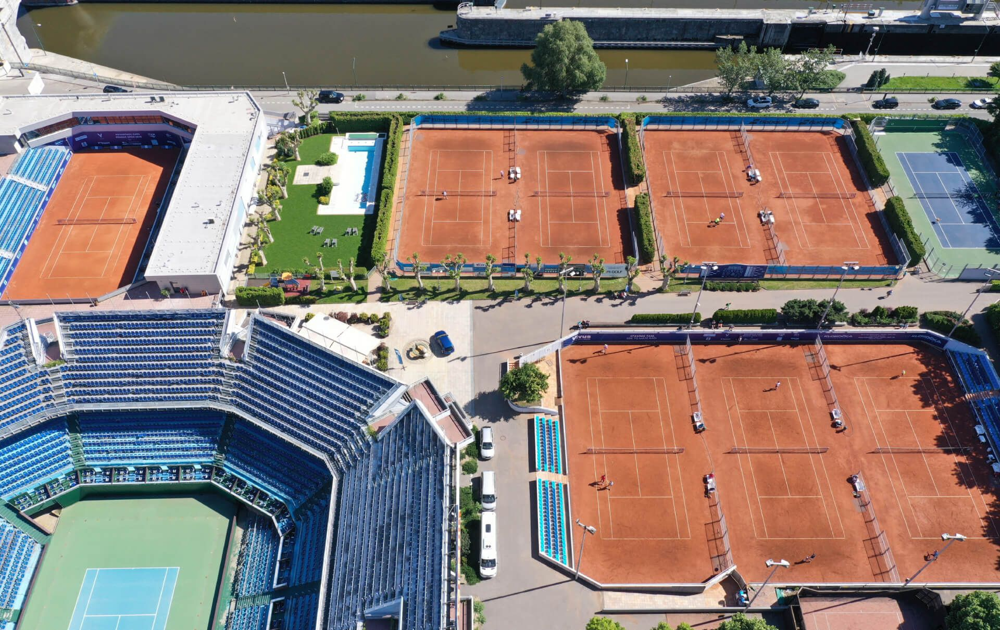


Bazén, wellness, fitness, fyzioterapie, restaurace Tiebreak s terasou, tenis shop, beach volejbal i firemní akce – všechno na jednom ostrově, pár minut od centra.
Štvanice právě hraje
Z Dauhá do New Yorku, v barvách klubu.
Karolína Muchová, Darja Viďmanová a další štvaničtí hráči v sezóně 2026. Výsledková tabule je vysázená jako program koncertu: klidně, přehledně, se sety pod sebou.
I. ČLTK Praha · sezóna 2026
Poslední výsledky
Výběr z klubových zpráv, stav k 23. 9. 2026
- 27. 8. 2026, New York, US Open, finále smíšené čtyřhry: Karolína Muchová a Jakub Menšík porazili Belindu Bencicovou a Flavia Cobolliho 6:3, 1:6, 10:6. Titul.
- 2. 8. 2026, Memphis, WTA 250, finále: Darja Viďmanová prohrála s Kristinou Liutovou 6:1, 1:6, 3:6.
- 11. 7. 2026, Londýn, Wimbledon, finále dvouhry žen: Karolína Muchová prohrála s Lindou Noskovou 2:6, 7:5, 3:6. První ryze české finále ženské dvouhry.
- 27. 6. 2026, Bad Homburg, WTA 500 na trávě, finále: Karolína Muchová vedla nad Naomi Osakou 6:1, 1:0, soupeřka skrečovala. Titul.
- 25. 6. 2026, Figueira da Foz, WTA 125, finále: Darja Viďmanová porazila Aylu Aksuovou 6:2, 6:3. První titul WTA.
- 16. 2. 2026, Dauhá, WTA 1000, finále: Karolína Muchová porazila Victorii Mboko 6:4, 7:5. Největší titul kariéry.
- 16. 2. 2026, Praha, Conseq Prague Open, ITF W75 v pevné hale na Štvanici, finále: Tereza Martincová porazila Sinju Krausovou 6:3, 6:4. Titul z kvalifikace.
Závodní tenis
Cesta Štvanicí
Od prvního míčku ve třech letech po extraligu. I. ČLTK je jeden ze tří klubů v Česku s celou pyramidou TSM → SVT → SCM, vedle Sparty a Prostějova.
26
reprezentantů České republiky z klubu v roce 2026 (ze 146)
4 z TOP 10
českého žebříčku žen hraje za Štvanici (léto 2026)
121
hráčů klubu v žebříčcích ČTS (léto 2026)
-
1
3–9 let
Tenisová škola
Minitenis, střední kurt a babytenis. Škola je přímou součástí klubu už víc než 15 let; nábory na jaře a na podzim.
- Dětí
- kolem stovky podle klubu
- Turnaje
- do 7, 8 a 9 let
Mgr. Jan Pecha, Ph.D.vedoucí trenér Tenisové školy -
2
10–14 let
TSM
Tréninkové středisko mládeže ČTS
- Hráčů
- 14 + 2
- Trenéři
- Jaroslav Jandus, Magdalena Zemanová
Bc. Antonín Štěpánekhlavní trenér TSM -
3
15–18 let
SVT
Středisko vrcholového tenisu ČTS, jedno ze šesti v Česku
- Hráčů
- 16 + 2
- Trenéři
- Jan Vacek, Milan Trněný
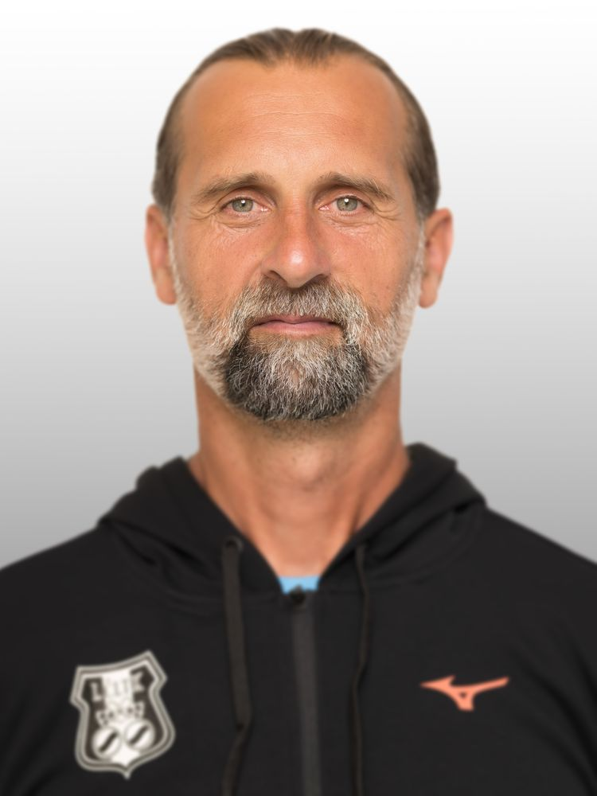
Daniel Vaněkhlavní trenér SVT -
4
15–21 let
SCM
Sportovní centrum mládeže ČTS – v Česku jsou jen tři
Hlavním trenérem SCM je podle ČTS Zdeněk Kubík, vedoucím SCM podle webu klubu sportovní ředitel Petr Vaníček.
- Hráčů
- 9 + 2
- Trenéři
- Jan Vacek, Milan Trněný
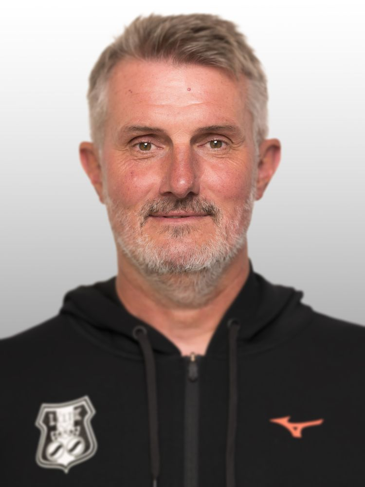
Petr Vaníčeksportovní ředitel a vedoucí SCM -
5
Dospělí
Extraliga, WTA a ATP
Mistr republiky v extralize smíšených družstev 2018 a 2019. Na soupisce 2025 mimo jiné Karolína Muchová, Nikola Bartůňková, Darja Viďmanová, Tereza Martincová, Jonáš Forejtek, Andrew Paulson, Jakub Nicod a Matěj Vocel.
- Kapitáni
- Petr Vaníček a Ivo Minář

Karolína Muchováfinalistka Wimbledonu 2026 · foto Martin Sidorják
Ceník a členství
Kolik stojí hodina v hale.
Zimní sezóna 2026/27 ve třech halách. Vyberte halu, čas a formu. Přepínač „Jsem člen“ ukáže členskou cenu a kolik ušetříte – třeba na antuce ve všední den odpoledne 140 Kč za každou hodinu.
Členství 2026
Roční příspěvek. Venkovní kurty v létě, bazén, fitness a regenerace v ceně.
Dospělý hrající21 000 Kč
Dospělý do 30 let15 500 Kč
Seniořiženy od 67, muži od 72 let; ve všední dny hrají do 14:0010 000 Kč
Mládež 4–18 let, studenti do 26 let9 500 Kč
Rodinné1 hrající + 1 dítěod 27 000 Kč
Firemnínejméně 2 přenosné karty40 000 Kč
Léto 2026
Cena za hodinu, celý den včetně víkendů. Členové hrají venku zdarma.
Kurty 1–9500 Kč
Slavoj, kurty 10–16400 Kč
Pevná hala P1, P2člen 500 Kč600 Kč
Večerní svícení, kurty 2, 3, 4150 Kč
Letní ceník pro sezónu 2027 doplní klub
Doplňkové služby a hosté
Beach a multifunkční hřiště mají členové zdarma, s hosty o 25 % levněji.
Multifunkční hřiště900 Kč/h
Beach volejbal400 Kč/h
Host člena na venkovním dvorci100 Kč/h
Host člena u bazénu400 Kč/den
Host člena ve fitness400 Kč
Kalendář
Rok na Štvanici.
Ciferník klubového roku: haly od konce září, turnaje, klubové dny i prosincové večery. Ručička ukazuje dnešek. Přerušované oblouky znamenají, že termín na rok 2026 klub teprve oznámí.
Dnes
23. 9.
Za 5 dníStart zimní sezóny v pevné hale P1, P2
Klubový rok – vyberte událost
Nejbližší termíny
28. 9.za 5 dní
Start zimní sezóny v pevné hale P1, P2
hrací období do 4. 4. 2027, 27 týdnů
29. 9.za 6 dní
Tenisová škola trénuje podle zimních rozvrhů
do 2. 4. 2027
5. 10.za 12 dní
Start zimní sezóny v přetlakových halách
do 4. 4. 2027, 26 týdnů
Klubové kalendáře po 23. 9. 2026 další akce zatím neuvádějí. U pravidelných akcí je uvedeno, kdy se konaly naposledy.
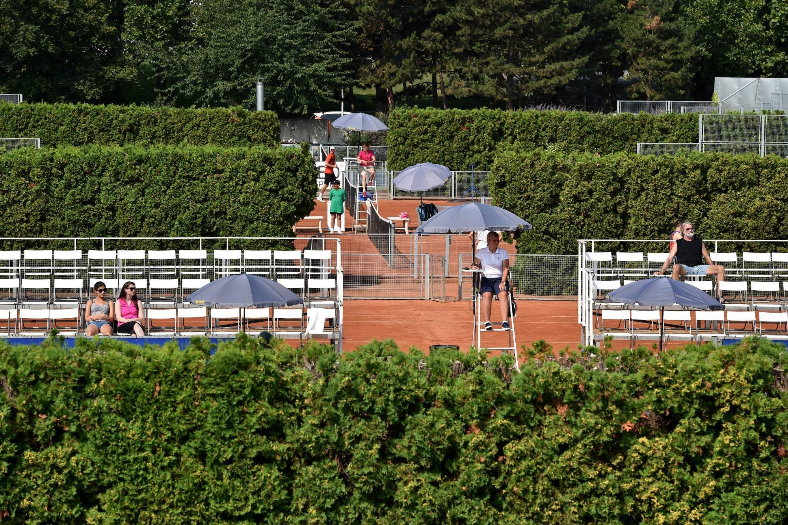
Tenisová škola a kempy
Tenis pro děti od tří do devíti let.
Tenisová škola připravuje děti v minitenisu, na středním kurtu a v babytenisu a pořádá pro ně vlastní turnaje. V ceně je trenér i kurt, za nepříznivého počasí se hraje v hale.
Zima 2026/27
7. 9. 2026 – 2. 4. 2027 · cena na osobu za 60 minut
Individuálně, celý kurt1 350 Kč
Individuálně, půl kurtu900 Kč
Ve dvou hráčích675 Kč
Ve třech, 2 trenéři625 Kč
Ve čtyřech, 2 trenéři475 Kč
Skupina začátečníků375 Kč
Základní členství v Tenisové škole 1 000 Kč ročně. Volno: 21.–28. 9., 26.–30. 10., 17. 11. a 23. 12. 2026 – 3. 1. 2027.
Letní kempy 2027
Termíny na léto 2027 doplní klub
Pro představu léto 2026: šest turnusů pro děti zhruba 4–9 let, v ceně oběd a pitný režim.
- 29. 6. – 3. 7.
- 6.–10. 7.
- 27.–31. 7.
- 3.–7. 8.
- 10.–14. 8.
- 24.–28. 8.
| Varianta | Hráč klubu | Ostatní |
|---|---|---|
| A – celodenní 8:30–16:30 | 6 000 Kč | 8 500 Kč |
| B – dopolední 8:30–13:30 | 5 000 Kč | 7 500 Kč |
Termíny a ceny kempů 2026, které už proběhly.
Přihlášky a dotazy: Mgr. Jan Pecha, Ph.D., vedoucí trenér · +420 721 663 118 · pecha@cltk.cz
Informace a rozvrhy Tenisové školyKlubový život
Na Štvanici se potkáváme.
Klubové dny v květnu a září, Valná hromada v červnu, Mikuláš, Večer talentů a Vánoční večírek v Letenském zámečku. A přátelé ze stoletých klubů Evropy.
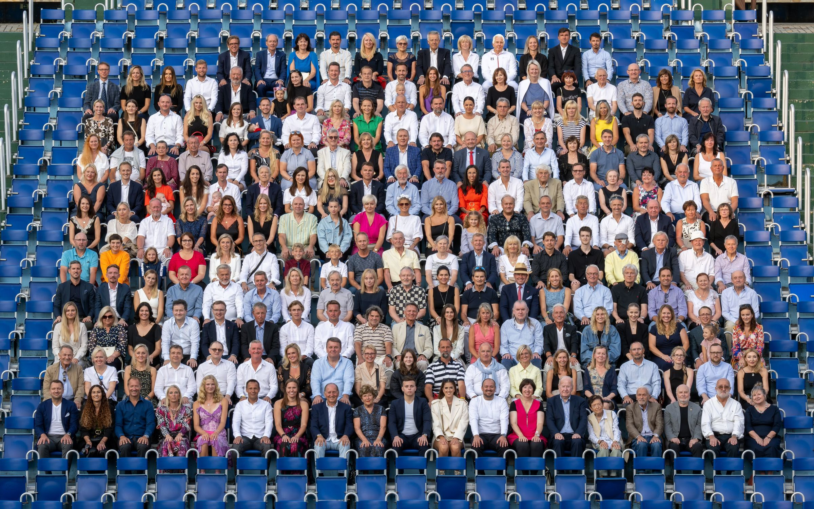
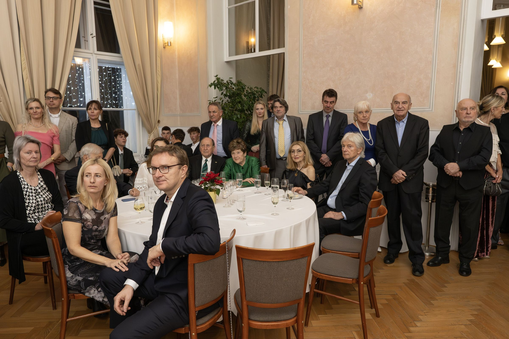
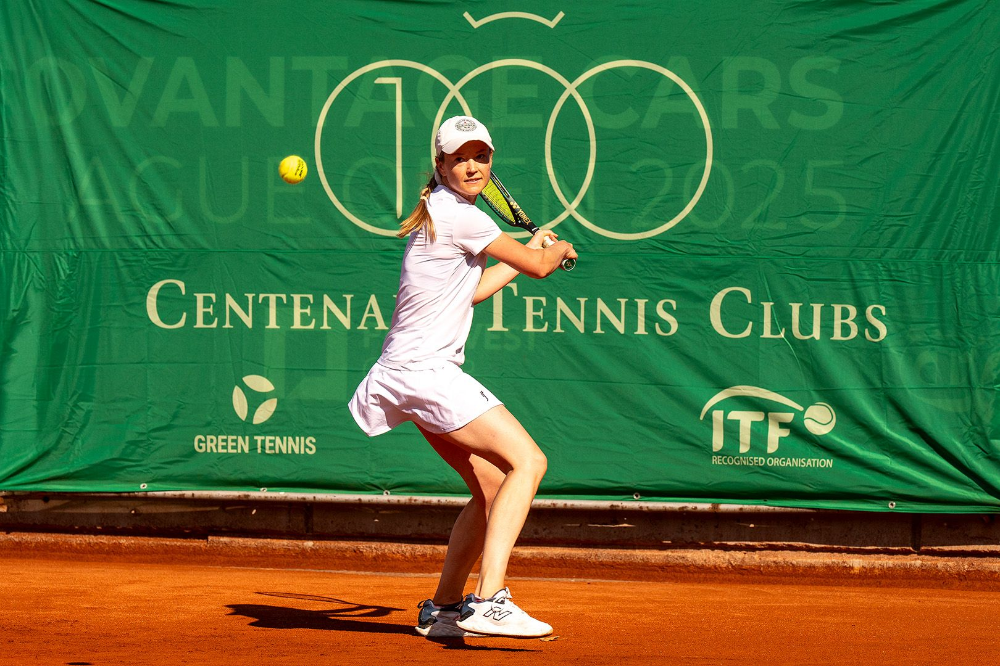
„V nejstarším klubu v Praze. … Je rodinný. Opravdu se tam cítím jako v rodině.“
Centenary Tennis Clubs · od roku 2000
Členský průkaz, který platí ve stoletých klubech
I. ČLTK Praha je jediným českým členem sdružení Centenary Tennis Clubs. To spojuje 98 klubů starších sta let. Členové klubu mohou po doporučení generálního manažera hrát zdarma v členských klubech po celém světě.
- Založeno
- 1996, sídlo Olympijské muzeum Lausanne
- V klubu
- od roku 2000 · jediný člen z ČR
- Mládež
- I. ČLTK Praha Cup (U14) od roku 2008, první listopadový víkend
Razítka · utkání na Štvanici
Zprávy z klubu
Z kurtů a z klubu.
Gratulujeme našim hráčům. Nejnovější zprávy, výsledky mládeže a dění v klubu; celý archiv článků a dvacet let klubové Revue najdete na cltk.cz.
- MládežJustýna Reifová vyhrála turnaj ITF J30Juniorka získala na Slovensku „double“ – premiérový titul v této kategorii. cltk.cz ↗
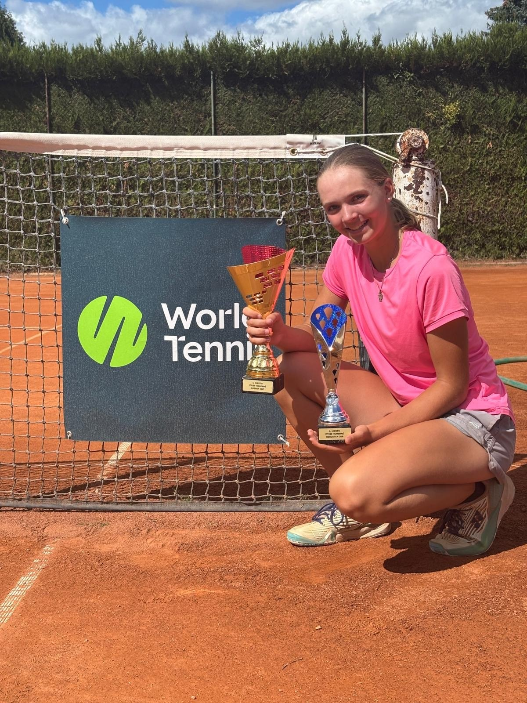
- DružstvaStarší žáci vezou z MČR družstev bronzTřetí místo z mistrovství republiky smíšených družstev v Ostravě; o bronz tým porazil Modřany. cltk.cz ↗
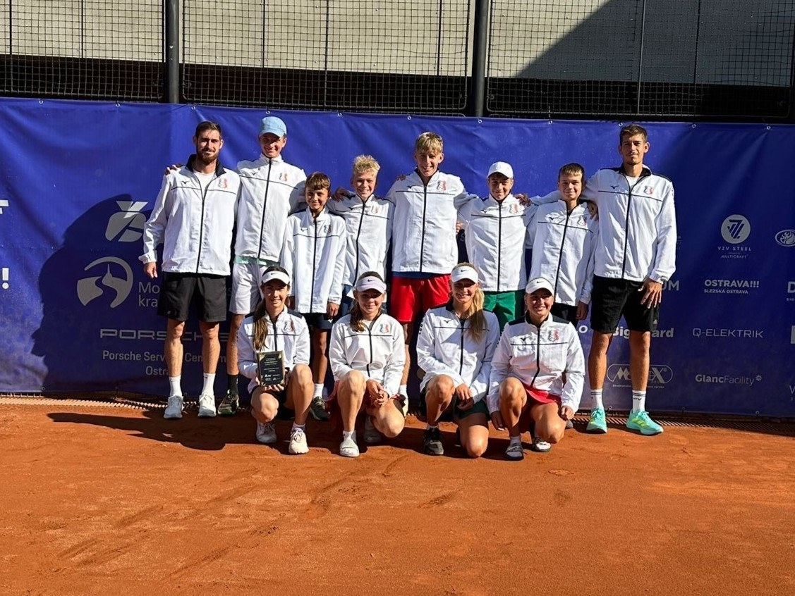
- ProfesionálovéDenisa Žoldáková ve finále turnaje ITF W75 v PolskuZ kvalifikace až do finále; podlehla ve třech setech Barboře Palicové. cltk.cz ↗
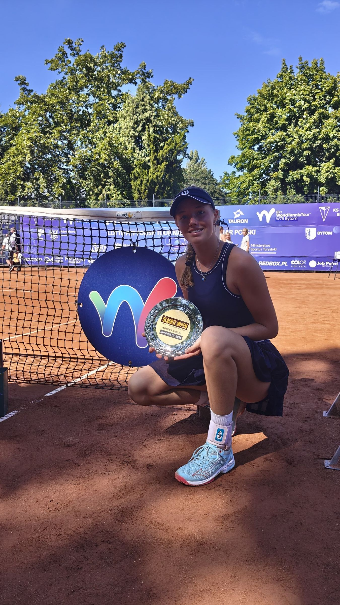
- ProfesionálovéKarolína Muchová ovládla smíšenou čtyřhru na US OpenS Jakubem Menšíkem porazila ve finále Bencicovou a Cobolliho – první grandslamový titul pro oba. cltk.cz ↗

- Turnaje v klubuSekyra Group Prague Open 2026 by Advantage CarsATP Challenger 75 a ITF W50 na štvanické antuce, 16.–22. 8., vstup zdarma. cltk.cz ↗
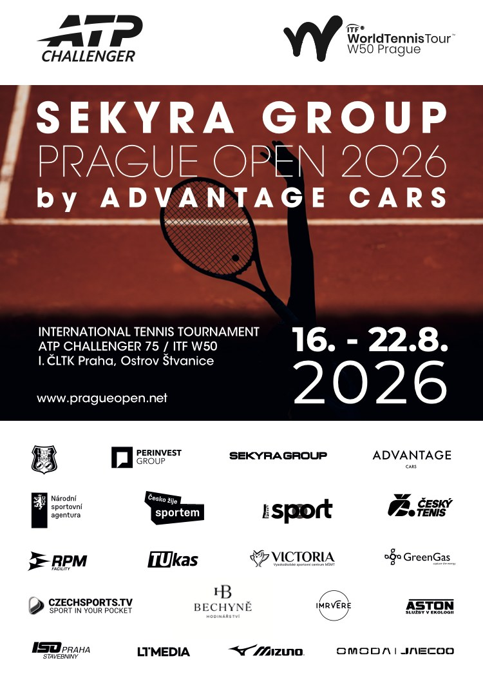
- ProfesionálovéDarja Viďmanová ve finále turnaje WTA 250 v MemphisuŽivotní úspěch: finále s Ruskou Liutovou ve třech setech a posun mezi elitní stovku. cltk.cz ↗
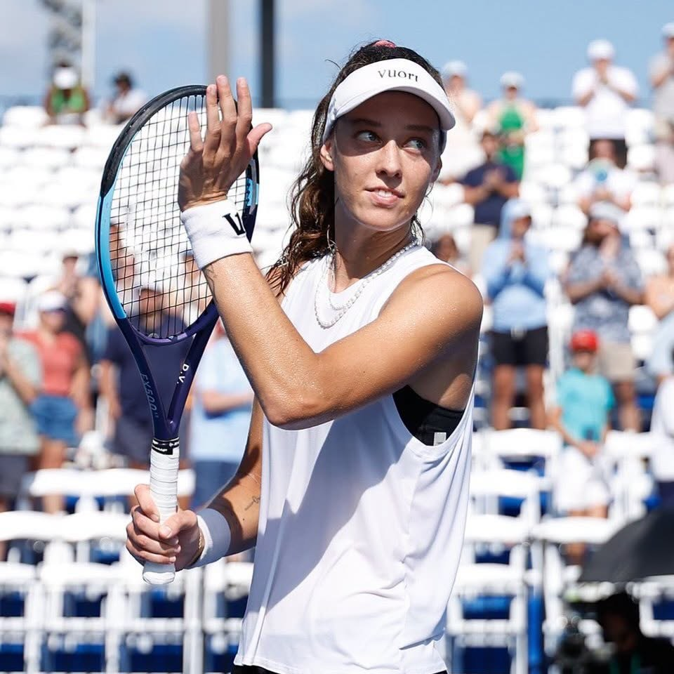
Partneři klubu
Za historií a úspěchy I.ČLTK Praha stojí i naši partneři. Děkujeme za podporu.